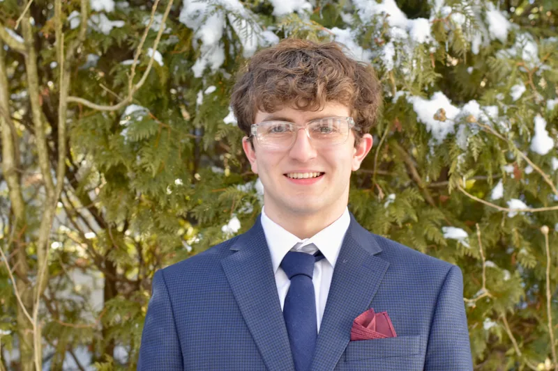

Hello! I am a curious, motivated, Cornell Engineering student based in New York. My drive comes from the intersection between engineering and the human body and finding medical solutions to problems we humans face.